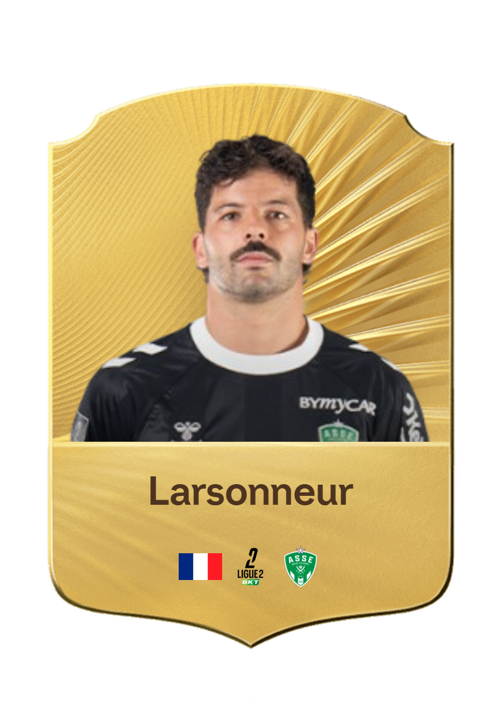
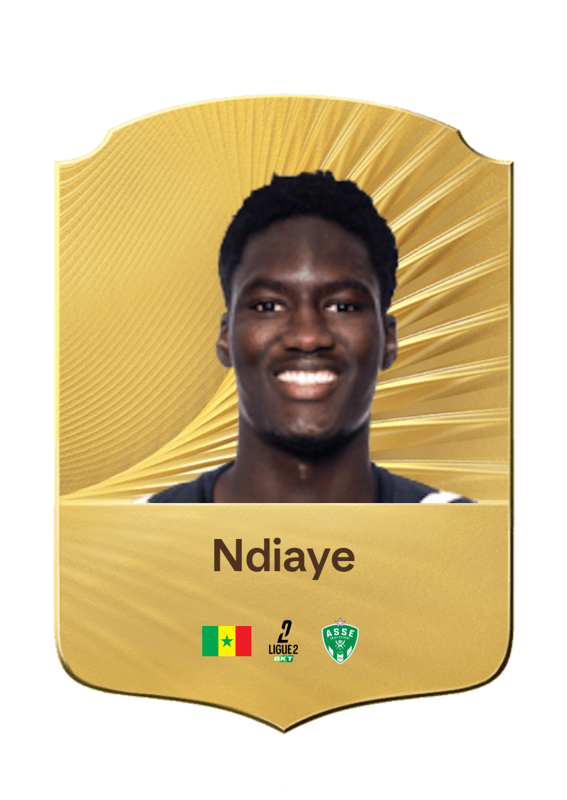

Les gardiens de l’AS Saint-Étienne constituent le dernier rempart de l’équipe et jouent un rôle essentiel dans la solidité défensive. Dotés de réflexes impressionnants, d’un sens du placement aiguisé et d’un mental à toute épreuve, ils sécurisent la cage stéphanoise à chaque rencontre. Leur capacité à rassurer la défense et à initier les relances propres en fait des éléments clés dans la construction du jeu.
Gardien n°1, Larsonneur brille par ses réflexes, son explosivité et son énergie. Déterminé, il apporte dynamisme et ambition au groupe.

Gardien n°2, Ndiaye apporte calme, solidité et expérience. Son sens du placement et sa fiabilité rassurent toute la défense.
